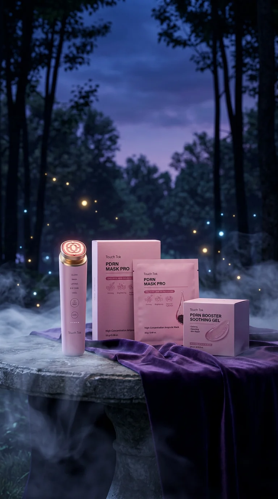
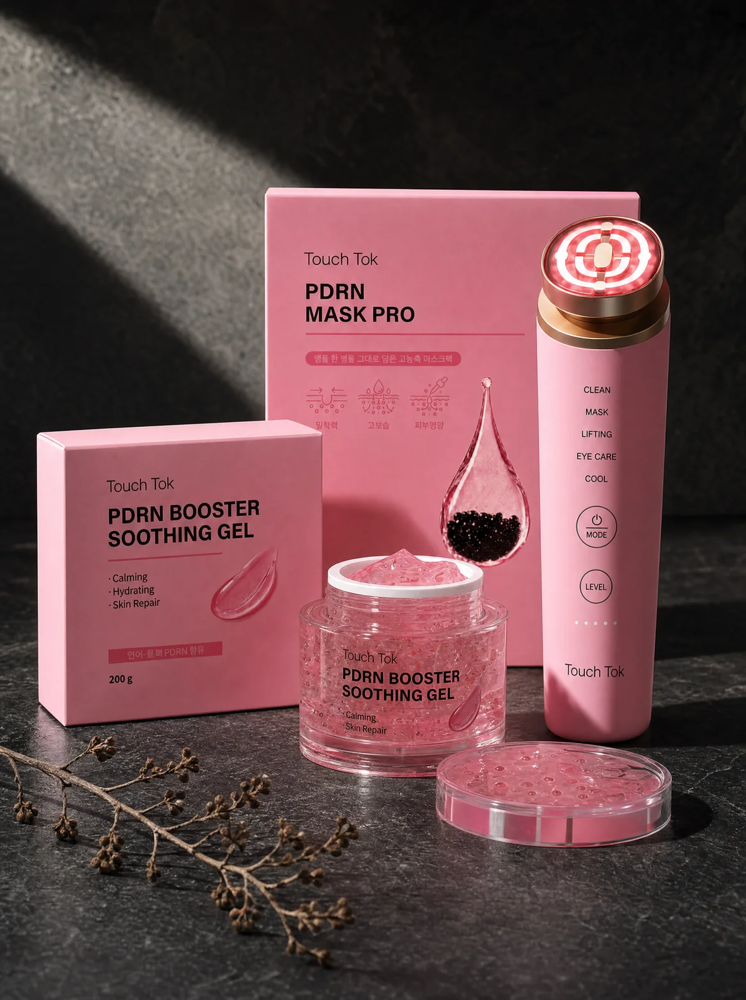
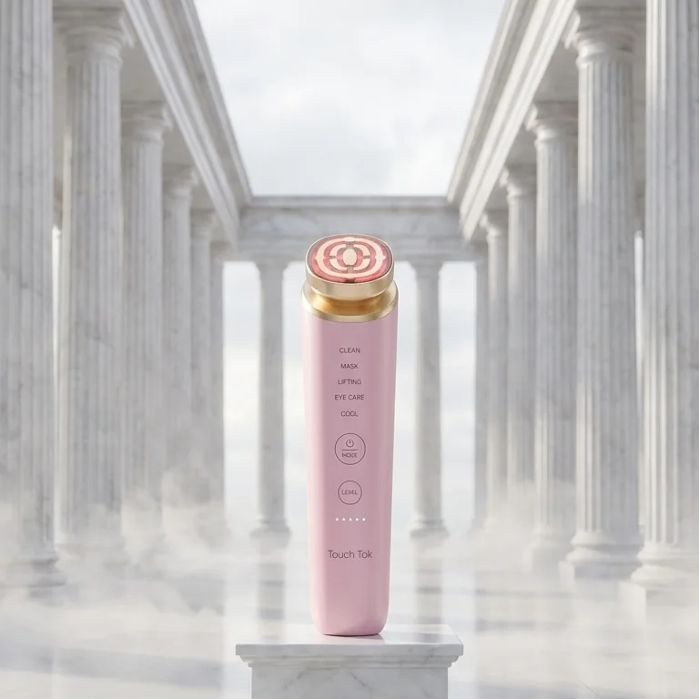
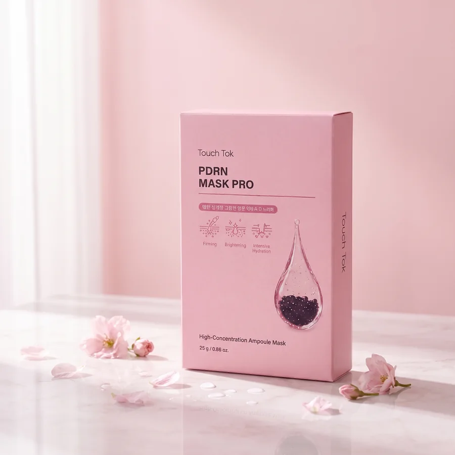
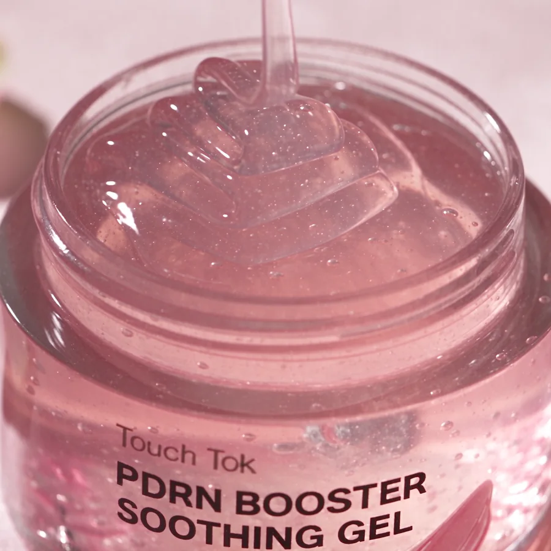

기기 하나로
다섯 가지 홈케어
디바이스와 PDRN 마스크팩, 부스터 수딩 겔을 함께 받는 구독 패키지입니다.
1년 무상 A/S · 5만원 이상 무료배송 · 무료 체험은 지금은 없습니다.
버튼 하나로 바꾸는
5가지 모드
전원 버튼을 길게 눌러 켜고, MODE 버튼으로 모드를, LEVEL 버튼으로 5단계 강도를 고릅니다.
- CLEAN클렌징
세안 후 물기를 닦고 사용합니다. 온열과 양이온을 쓰는 모드.
- MASK마스크
마스크팩을 붙인 위에서 사용합니다. 음이온과 EMS를 쓰는 모드.
- LIFTING탄력 관리
RF·EMS와 레드·그린 라이트를 함께 쓰는 모드. 주 2~3회 사용을 권장합니다.
- EYE CARE아이케어
눈가에 맞춰 RF·EMS 강도를 조절한 모드.
- COOL쿨링
냉각과 블루 라이트로 마무리하는 모드.
연출 영상 · 모드 이름은 기기에 적힌 표기 그대로입니다.
마스크 위에
터치톡
PDRN MASK PRO를 붙이고, 그 위에서 터치톡을 천천히 움직입니다.
- 세안 후 마스크팩을 얼굴에 붙입니다.
- 모드를 고르고 마스크 위에서 기기를 사용합니다.
부스터 수딩 겔은 기기와 함께 쓰는 겔 타입 스킨케어입니다. 자세한 사용 순서와 주의사항은 제품 설명서를 따르세요.
터치톡과 함께 쓰는
PDRN 화장품 2종
12개월 구독 패키지에는 디바이스와 함께 PDRN MASK PRO 96장, PDRN BOOSTER SOOTHING GEL 12개가 들어 있습니다. 기기 관리 전후의 피부를 채우는 역할입니다.

한 장에 앰플 25g, 세미겔 마스크
앰플 한 병 분량(25g)을 세미겔 시트에 그대로 담았습니다. 터치톡 MASK 모드와 함께 쓰도록 만든 고농축 앰플 마스크입니다. 대나무 화이버 시트가 얼굴 굴곡에 밀착되고, 기기를 위에 올려도 앰플이 흘러내리지 않습니다.
- 보습
- 피부 결 정돈
- 진정에 도움
- 8장 / 1박스
- 연어 PDRN (소듐DNA) 100ppm연어 추출물 유래 DNA 조각 성분. 보습과 피부 결 정돈에 도움을 줍니다.
- 300Da 초저분자 콜라겐 워터작은 분자 크기의 콜라겐 수용액으로 피부 표면을 촉촉하게 채웁니다.
- 펩타이드 7 복합체 & 캐비아 추출물탄력 관리 루틴에 쓰이는 영양 성분 조합입니다.
- 세안 후 토너로 결을 정돈합니다.
- 시트를 펴서 눈·코·입에 맞춰 밀착합니다.
- 터치톡 MASK 모드로 시트 위에서 천천히 움직입니다. (기기 없이 마스크만 써도 됩니다.)
- 10분 뒤 떼어내고, 남은 앰플은 목과 손등까지 두드려 흡수합니다. 주 2~3회 권장.
25g1장 앰플8장1박스96장12개월10분권장 착용

바르는 순간 쿨링, 하루의 마무리 겔
연어 추출물 PDRN을 담은 200g 대용량 수딩 겔. 터치톡을 쓸 때는 피부와 기기 사이를 부드럽게 채우는 부스터 겔로, 평소에는 세안 후 진정 겔로 씁니다. 떠올리면 탱글하게 서고 피부에 펴면 물처럼 녹아, 두껍게 올려도 하얗게 밀리지 않습니다.
- 피부 진정에 도움
- 보습
- 쿨링감
- 200g
- 얼굴 · 바디
- 연어 PDRN & 펩타이드 7 복합체보습과 피부 결 정돈, 탄력 관리에 쓰이는 성분 조합입니다.
- 저분자 & 고분자 히알루론산피부 표면과 속까지 수분감을 채웁니다.
- VITA 복합체 (글루타티온 · 아스코르브산)맑은 피부 결 관리를 돕는 비타민 계열 성분입니다.
나이아신아마이드 2% · 아데노신 0.04% 함유 (식약처 고시 기준). 식약처 기능성화장품 보고 완료 2026.06.08 · 접수번호 202600847780 · 제조 대한민국.
- 데일리 — 세안·토너 다음 단계에 적당량을 펴 바릅니다.
- 터치톡 부스터 — 겔을 얇게 펴 바른 뒤 탄력 관리 모드로 기기를 움직입니다. 남은 겔은 두드려 흡수하고 헤드는 닦아 주세요.
- 수딩 팩 — 열로 달아오른 피부에 두껍게 올려 10분 뒤 두드려 흡수. 면도·샤워 후 바디에도.

겔 바르고, 탄력 관리 모드
세안 → 겔(부스터) → 터치톡 → 마스크 10분 → 겔 마무리. 패키지 하나로 저녁 10분 루틴이 끝납니다.
각 성분 설명은 원료 특성에 한하며, 사용 효과는 개인차가 있을 수 있습니다. 기능성 화장품은 식약처에 보고된 효능·효과 범위 안에서만 표기합니다. 외용으로만 사용하고 눈 주위·상처 부위는 피하세요. 이상 반응 시 사용을 중단하고 전문의와 상담하세요. 전성분은 제품 포장을 확인하세요.
영상으로 보기
패키지 구성
디바이스 하나와 전용 스킨케어 두 가지입니다.


터치톡 디바이스
5가지 모드 · 5단계 강도

PDRN MASK PRO
앰플 마스크 시트

PDRN BOOSTER SOOTHING GEL
겔 타입 스킨케어
사진은 연출 이미지입니다. 구성 수량은 공식몰 상품 페이지에서 확인하세요.
가격과 조건
| 12개월 구독 패키지 | 406,980원 예약판매 특별가 · 소비자가 478,800원 |
|---|---|
| 3개월 구독 패키지 | 199,000원 |
| 스킨케어 발송 | 3개월 · 6개월 · 일괄 중 선택 |
| 배송비 | 3,000원 (5만원 이상 무료) |
| A/S | 1년 무상 |
| 무료 체험 | 지금은 없습니다 |
12개월 구독 패키지 406,980원 (예약판매 특별가 · 소비자가 478,800원). 결제 금액과 행사 내용은 공식몰 상품 페이지가 기준입니다.
자주 묻는 질문
무료 체험이 있나요?
지금은 없습니다.
결제는 어디서 하나요?
스마트에버 공식몰(smartever.co.kr)에서 결제합니다. 아래 버튼이 상품 페이지로 연결됩니다.
마스크팩과 겔은 언제 오나요?
주문할 때 3개월 · 6개월 · 일괄 발송 중에서 고릅니다.
마스크와 겔은 기기 없이도 쓸 수 있나요?
네. 둘 다 단독 사용이 가능합니다. 마스크는 주 2~3회, 겔은 매일 써도 됩니다.
마스크와 겔을 같은 날 써도 되나요?
네. 마스크 후 남은 앰플을 흡수시키고 겔로 마무리합니다. 시술 후 사용은 담당 의료진과 상의하세요.
해지·환불 조건은 어떻게 되나요?
공식몰 상품 페이지의 안내를 따릅니다. 궁금한 점은 고객센터 1800-6825(평일 10~17시)로 문의하세요.
A/S는 어떻게 받나요?
공식 판매처 구매 기준 1년 무상 A/S입니다.